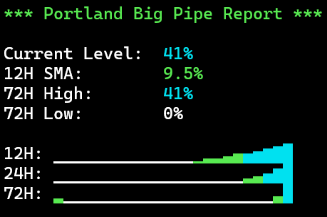

|  |
Portland Big Pipe ReportPortland Big Pipe Report is a PowerShell script that fetches and displays real-time statistics about the Portland Big Pipe system, which is a combined sewer overflow (CSO) control system. The script retrieves 15-minute interval data from the City of Portland's website and presents it in an easy-to-read format with color-coded statistics and visual sparkline graphs. The script supports command-line arguments for selective output, making it ideal for scripting and integration with other tools. Key features include:
The script displays comprehensive statistics including current level, 12H/24H/72H simple moving averages (SMA), and 12H/24H/72H high/low values. When the pipe reaches 100% capacity, it also displays the duration it has been at full capacity, calculated using Pacific timezone to account for data lag. Sparklines use time-based binning with automatic interpolation of missing samples, ensuring continuous visualizations even when data points are missing. Each percentage value is individually color-coded, and sparkline glyphs change color based on their fill level, providing an intuitive visual representation of the Big Pipe system status. Use command-line arguments to display specific output lines for scripting and automation. Official Website: Portland Big Pipe Tracker UpdatesLoading updates... DownloadsPowerShell Edition: [ ps1 ] ↳ README |